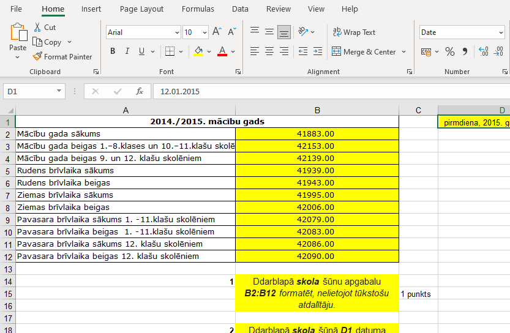
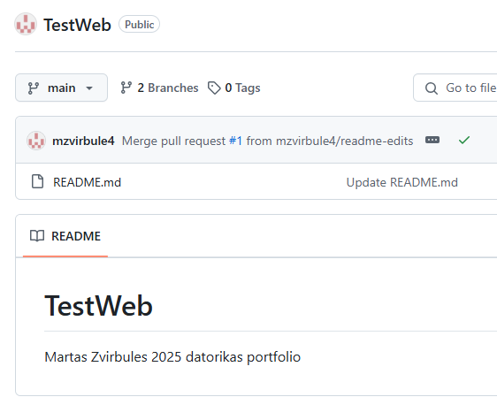
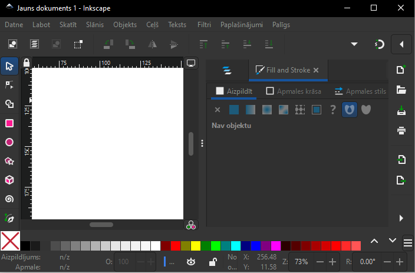
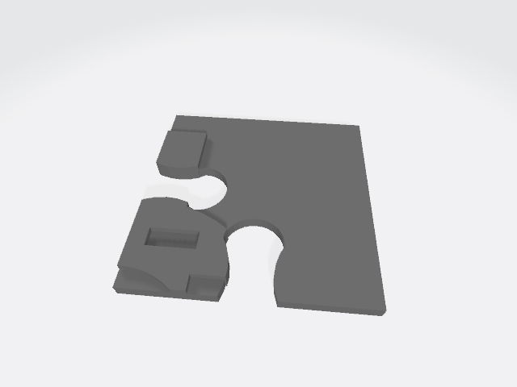

GIMP
GIMP ir attēlu rediģēšanas aplikācija,kas ir bezmaksas un atvērtā koda rastra grafikas redaktors,
ko izmanto attēlu apstrādei (retouching) un attēlu rediģēšanai, brīvas formas zīmēšanai,
dažādu attēlu failu
formātu pārkodēšanai un specializētākiem uzdevumiem. Tas ir paplašināms, izmantojot spraudņus, un skriptējams.
Tas parasti nav paredzēts zīmēšanai, lai gan mūsu klase to izmantoja arī tādā veidā.
WORD
Microsoft Word ir Microsoft izstrādāta tekstapstrādes programma.
Pirmo reizi tas tika izlaists 1983. gada 25. oktobrī ar nosaukumu Multi-Tool Word Xenix sistēmām.
Turpmākās versijas vēlāk tika rakstītas vairākām citām platformām.
WORD ir oficiālā tekstapstrādes programma, ko izmantojām arī mēs. Par to mums bija PD 22.11.2025
EXCEL
Microsoft Excel ir Microsoft izstrādāts izklājlapu redaktors operētājsistēmai Windows, macOS, Android, iOS un iPadOS. Tajā ir aprēķinu vai skaitļošanas iespējas, grafiku veidošanas rīki, rakurstabulas un makro programmēšanas valoda, ko sauc par Visual Basic for Applications (VBA). Programma Excel ir daļa no Microsoft 365 un Microsoft Office programmatūras komplektiem un tiek izstrādāta kopš 1985. gada. Šajā tēmā mēs Pārbaudes Darbu rakstījām 24.01.2025.
GIF
Mēs veidojām īsu, 4 rāmju animāciju par jebkādu tēmu. Es šo izveidoju par basketbolistu, kas veiksmīgi trāpa bumbu grozā!!
.gif)
HTML
Hiperteksta iezīmēšanas valoda jeb HTML (no angļu: HyperText Markup Language) ir iezīmēšanas valoda, kas ir izstrādāta tīmekļa lappušu un citas pārlūkprogrammā attēlojamas informācijas glabāšanai. Ar šo joprojām strādājam ;)). PD būs par šo, kā arī viens 21.03.2024.!!
Inkscape
Inkscape ir vektorgrafikas redaktors. To izmanto gan mākslinieciskām, gan tehniskām ilustrācijām, piemēram, karikatūrām , klipkopām, logotipiem, tipogrāfijām, diagrammām un blokshēmām. Tas izmanto vektorgrafiku, lai nodrošinātu asas izdrukas un atveidojumus neierobežotā izšķirtspējā,un tas nav saistīts ar noteiktu pikseļu skaitu, piemēram, rastra grafika. Tā ir bezmaksas un atvērtā koda programmatūra. Mēs šo aplikāciju izmantojām grupu darba ietvaros, lai veidotu mūsu izdomātā biznesa logo.
TinkerCad
Tinkercad ir bezmaksas tiešsaistes 3D modelēšanas programma, kas darbojas tīmekļa pārlūkprogrammā. Mēs šo lietojām, lai veidotu puzli - mūsu kompānijas suvenīru
